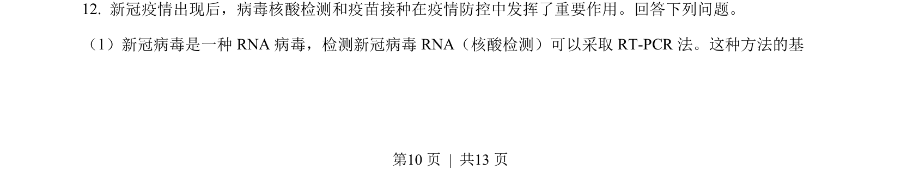
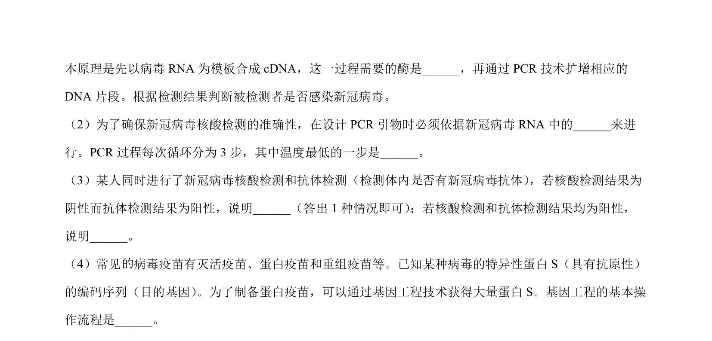
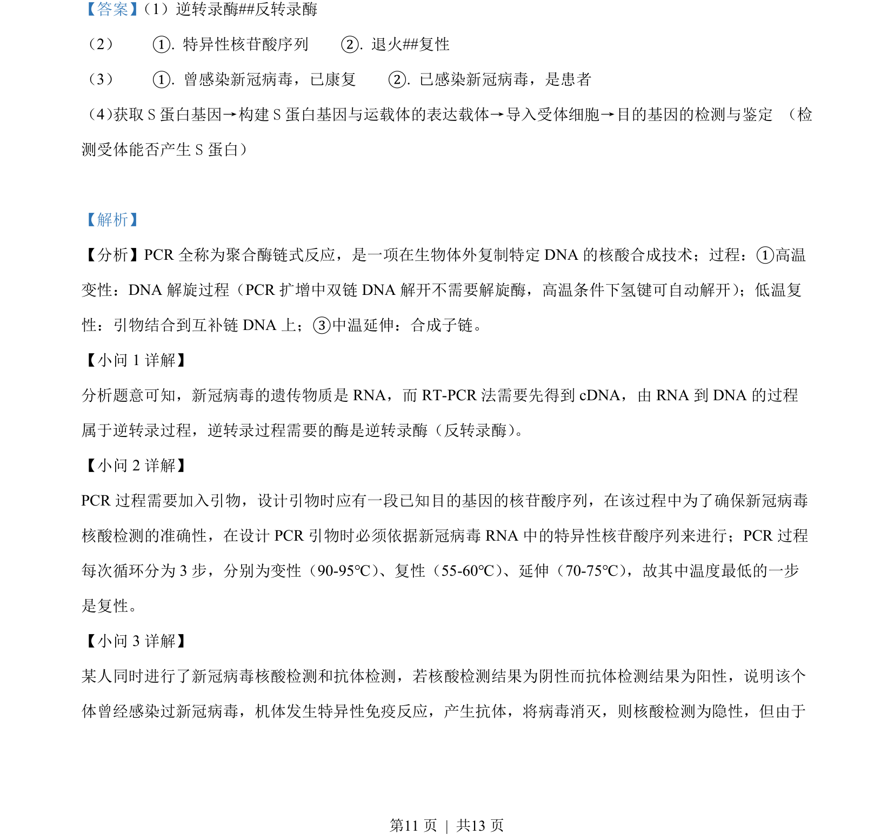
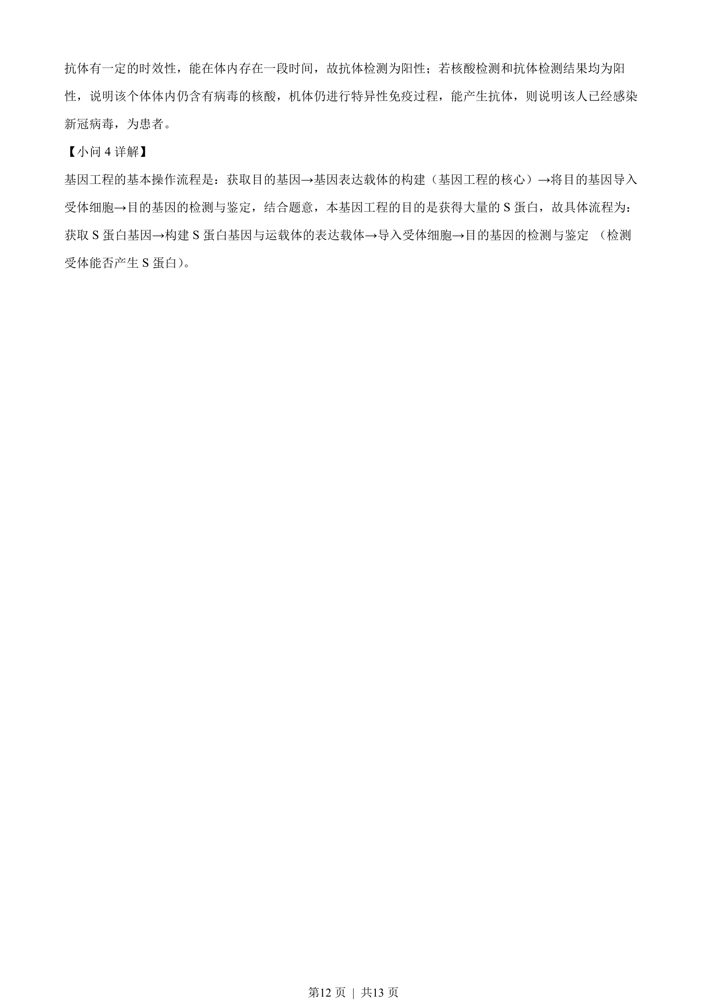

考点：RNA病毒 核酸检测 RT-PCR 逆转录
RNA病毒
核酸检测
RT-PCR
逆转录


新冠病毒核酸检测采用RT-PCR方法的原理与步骤


📄 原 PDF 第 10 页：素材/真题/吉林/2008-2024·（吉林）生物高考真题/2022年高考生物试卷（全国乙卷）（解析卷）.pdf
素材/真题/吉林/2008-2024·（吉林）生物高考真题/2022年高考生物试卷（全国乙卷）（解析卷）.pdf